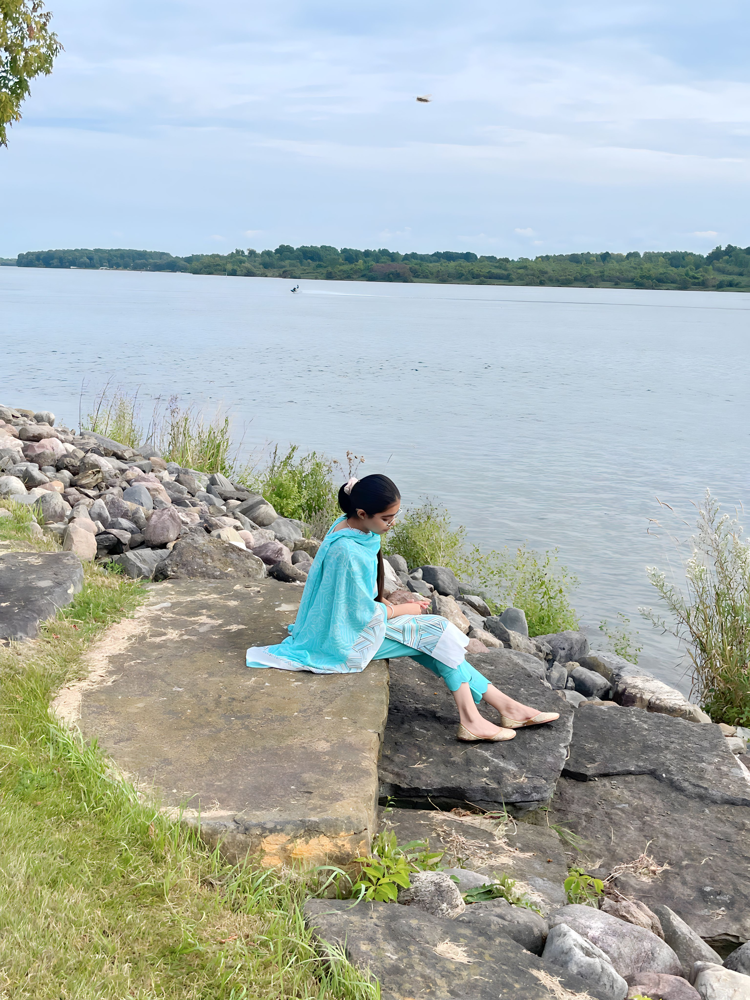

i am nineteen years old Taranjot Kaur from the striking beautiful country India.
I was born in november in 2004.I reflect a varied personality including ambition ,
confident,internally motivated,and the qualities of generosity andthoughtfullness.I am also
a well determined and vigorous individual,yet pleasantly calm.i encourage fighting for what
you desire and believe in and doing it through God because nothing great comes out without
hardwork and struggle.
click me to go to the bottom
I have completed my senior secondary education from Amrit Indo Canadian Academy click here to visit the school website in Science stream india ,and i got ranked third in my high school, after i came to St.Lawrence College in cornwall,canada to study game-programming.I am a part-time student, motivated by my love for learning and succeeding in life .I strive to become a successful woman in my life.
So, here's display of my work being a nail artist :
Click on the nails to go to another page , and to get more knowledge about artificial nails.
.png)
| sr no. | work | working period |
|---|---|---|
| 1. | office administrator | 6 months |
| 2. | nails artist | 6 months |
i love dogs and hate cats. i am nineteen and i have had 8-9 dogs till now.Dogs taught me that
love is described by actions not words
i had a dog named tuffy , he was a german shepherd . He died in 2021 because of loss of cells in his body.
Presently,i have a dog named guffy.
It is said that
Once you had a wonderful dog, a life without one,is a life dimnished
So, he is Guffy.
A five year forecast of my life include me having completed my diploma of Game programming,and atleast a degree in aeronautical engineering . And seeing myself living a happy,successful in life in coming future .
Life is like a box of chocolate
you never know what you are going to get.
Email id - Tanuarora364@gmail.com